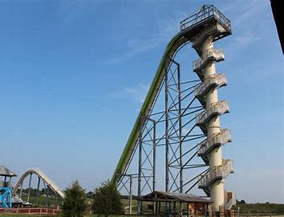

On the way to the top I started rethink if I wanted to keep on going but i am scared to ask my friends what should I do try to talk them out of it or keep in going and become a youtue legend?

go back home
keep going